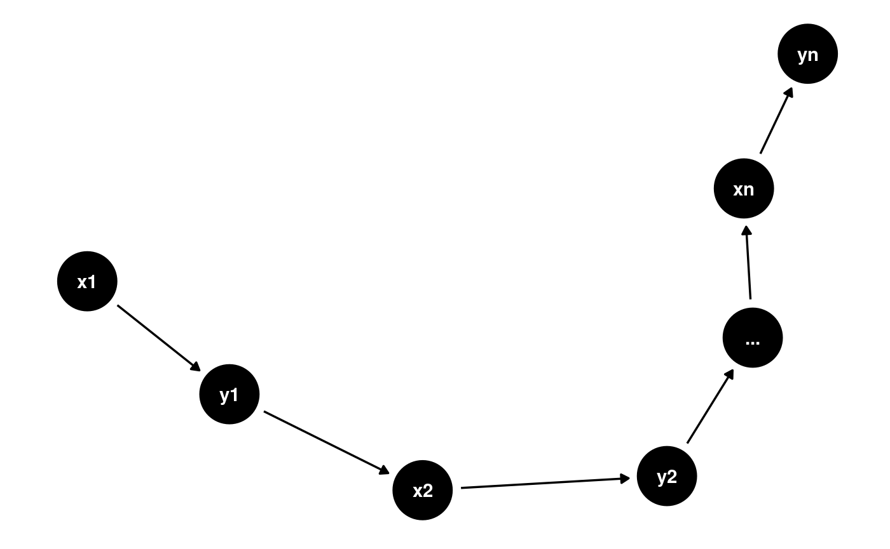
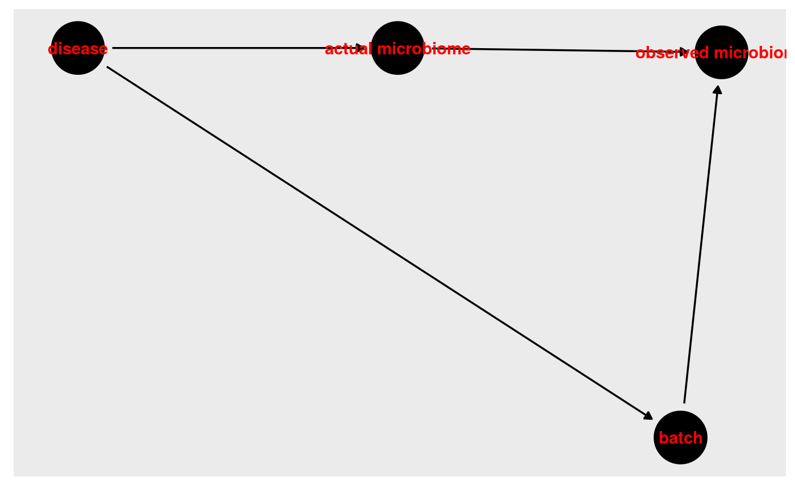

vignettes/questionResponses.Rmd
questionResponses.RmdAdditional questions: cmirzayi@gmail.com or post an issue on Github: https://github.com/cmirzayi/EpiForBioWorkshop2020
Answer: This is an excellent question. One of the limitations of the workshop was that I didn’t have time to talk about generalizability and external validity of study results. First I would distinguish between generalizability and transportability. Generalizability refers to the process of taking study results and applying them to the same population from which the sample was derived. Transportability, in contrast, is taking results and applying them to a different population (such as a different city).
However, you are correct. If we derive an estimate of a causal effect from a cohort study conducted in a single city (such as the Framingham Heart Study), our estimate is conditional on that city. We can, however, consider our conditions and attempt to transport our findings to other populations by adjusting our estimates based on how those conditions vary in the target population.
Pearl has considered transportability in a technical report (https://ftp.cs.ucla.edu/pub/stat_ser/r372.pdf) and commentary (https://ftp.cs.ucla.edu/pub/stat_ser/r372.pdf) which discuss this issue in more detail. Additionally, Lesko et al. have an excellent article discussing generalizing study results from a causal inference perspective (https://www.ncbi.nlm.nih.gov/pmc/articles/PMC5466356/).
Answer: Good question! It is important to model relevant variables according to your causal diagram and menopause may have important effects that would not be fully accounted for if just modeling age. Choosing how to model variables is more of a statistical question than a causal inference question, but I can take a stab at it. In the case of menopause, you might collect self-report data from participants on whether they have experienced menopause or not and include that variable in the model. I would imagine this variable as three categories: yes, no, not applicable. You could also potentially measure relevant hormone levels and use that as a variable in your model.
Answer: DAGs by definition are acyclic (they are directed acyclic graphs after all!) so you are correct that feedback loops aren’t possible in a DAG. I would consider creating a longitudinal DAG showing that in fact the feedback loop is in fact causing a change in a variable across time points. For instance imagine we have two variables x which causes y which in turn creates more x at time points 1, 2, …, n. Here is how I might represent this:
library(dagitty) library(ggdag) long <- dagitty("dag{x1->y1->x2->y2->...->xn->yn}") ggdag(graphLayout(long))+theme_dag_blank()

Answer: This is a tough question. What I’ve talked about shouldn’t make you feel like you’re gatekeeped out of an analysis because you don’t understand it well enough. Instead, you should recognize your assumptions and unknowns. We can never be quite sure that we’ve identified every possible variable but that shouldn’t stop you from running your analysis. In fact, recognizing that there are unknowns in your research can be quite valuable in identifying future research opportunities. Additionally, if you understand the assumptions and unknowns you’re making you can situate your findings in that understanding.
Ideally you would consult a person or people experienced in that domain and develop a DAG in consultation with them. Another possibility is to consult previous work in the field to see what they’ve identified as potentially important in the causal mechanism around your topic of interest. You could also look at similar topics or conditions to see what they have used in their models.
Answer: I answered this question during the talk but I didn’t like my answer very much (talking for nearly an hour to 100+ people is mentally taxing). Although batch effects are commonly referred to as a confounder, I’m not sure that they are. I’m having trouble identifying a DAG where a batch effect can cause the disease (or the observed disease status) and the microbiome (or the observed microbiome). This is how I imagine it most likely looks if samples from people with the disease are processed in a different batch from those who did not have the condition of interest:
batch <- dagitty("dag { bb=\"0,0,1,1\" \"actual microbiome\" [pos=\"0.369,0.360\"] \"observed microbiome\" [outcome,pos=\"0.448,0.358\"] batch [pos=\"0.438,0.182\"] disease [exposure,pos=\"0.291,0.360\"] \"actual microbiome\" -> \"observed microbiome\" batch -> \"observed microbiome\" disease -> \"actual microbiome\" disease -> batch } ") ggdag(batch, text_col="red")+theme_dag_gray()

In this case, batch effects are a second pathway between the disease and the observed microbiome. We still want to adjust by batch to block that second pathway since we’re only interested in the first pathway. In this sense, batch effects are biasing the observed microbiome but not due to confounding–it is due to potential differential measurement bias.
Answer: I don’t work with gene interaction networks–most of my work is focused on the microbiome. If you asked this question and want to speak more about how this works, please contact me!
Additional questions: cmirzayi@gmail.com